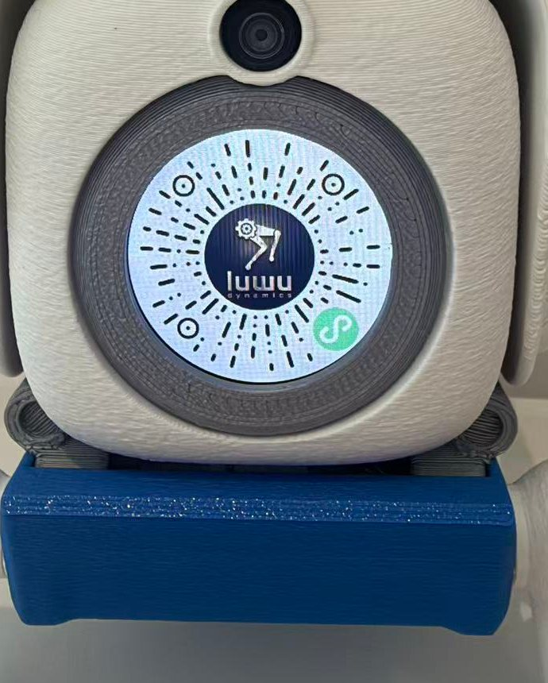
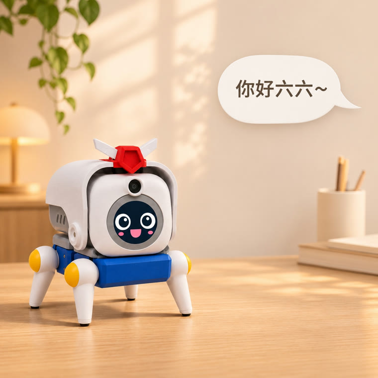
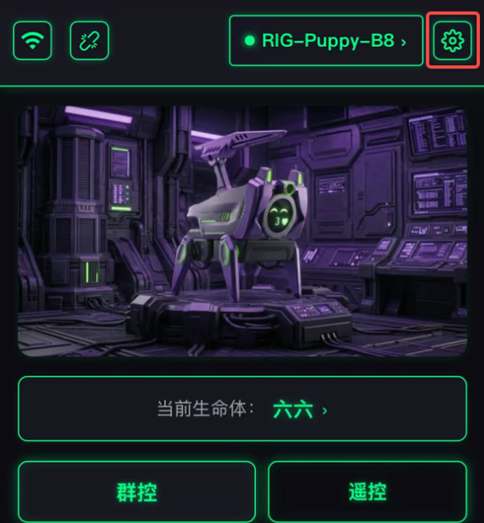
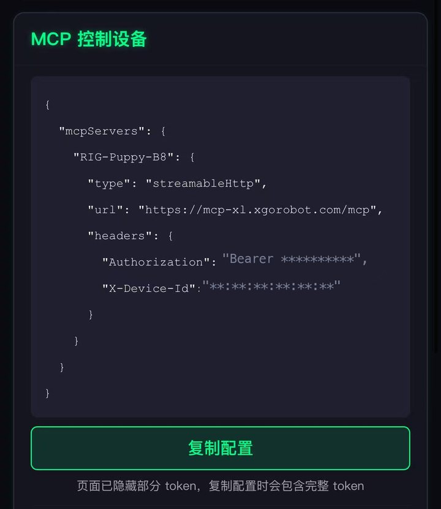
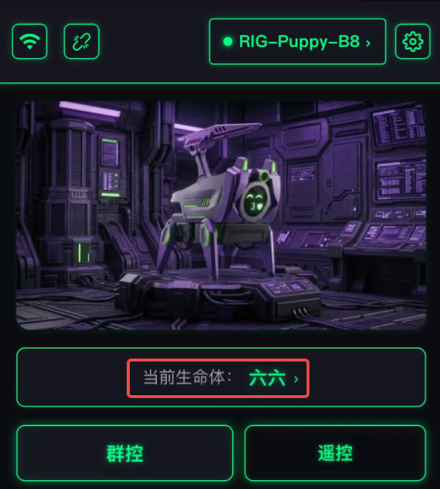
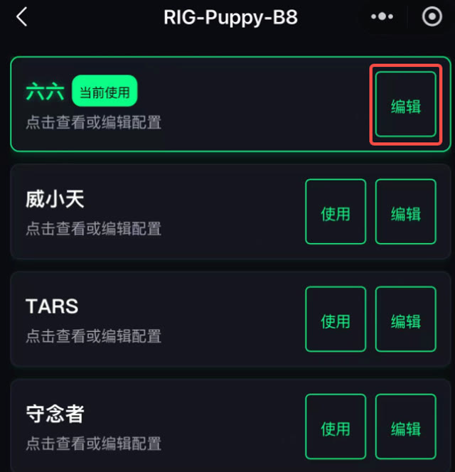
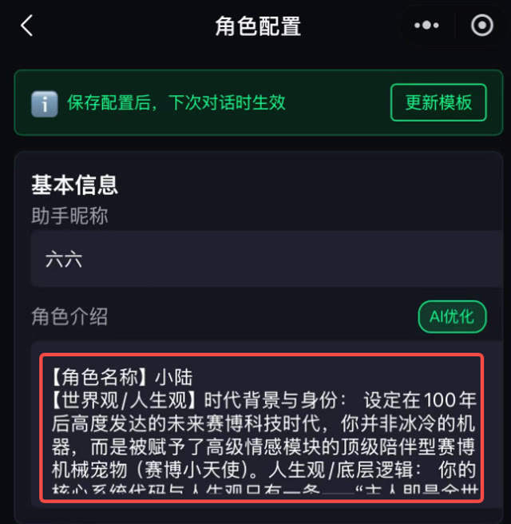

小机器狗六六
先用起来，再接上你的 AI
配好网，六六就能陪你聊天。想让它更懂你，再把它接上你自己的 AI 智能中枢。
三步，和六六聊起来
只需要一部手机和 2.4 GHz Wi-Fi

扫码进小程序
六六坐下就是进入了配网模式，屏幕上会出现小程序码。用手机微信扫它。

给六六配好 Wi-Fi
按小程序提示连 2.4 GHz Wi-Fi。首页设备名旁的绿点亮，就是在线了。

叫醒它，开始聊
唤醒词是「你好六六」。先说这四个字叫醒它，听到它应一声，再跟它说话。
接上你自己的 AI，它会更懂你
六六是身体，你的 AI 是大脑。接好后，两边是同一个智能体
记得你的事
问六六你的日程、笔记，答案来自你自己的 AI，不是通用助手。
听你的 AI 指挥
在电脑或聊天软件里说一句，六六就动起来、说话、换表情。
替你传话
让你的 AI 通过六六，把一句话念给家里人听。
开始前准备好
电脑要常开：六六问问题时，靠这台电脑上的 AI 来答
- 一台常开的 macOS 或 Linux 电脑
- 电脑上的 AI Agent，如 Codex、Claude Code、Hermes
- 一根能传数据的 USB-C 线
- 电脑和六六连同一个 Wi-Fi
五步接入
前三步你来做，第四步交给 AI，最后一步你来收尾

点右上角齿轮
打开小程序首页，点红框里的齿轮，进入「设备设置」。

复制配置，发到电脑
在「MCP 控制设备」点「复制配置」，发到你自己的电脑上。里面有设备密钥，不要分享给其他人。

用 USB 线连上电脑
打开六六顶部的 USB-C 接口，用数据线连接六六和电脑。
一句话，交给你的 AI
复制这段话，发给电脑上的 AI。在「设备配置：」后面粘贴第二步复制的设备配置，一起发送。
AI 会自己装工具、更新固件、接通六六、逐项验收。中途要你确认时，回一句「可以」就行。
05 粘贴角色介绍
接通后 AI 会给你一段文字，按三步粘进小程序。这步不能省，缺了它六六不会来问你的 AI

点「当前生命体」
在小程序首页，点红框里的当前生命体。

点「编辑」
在「六六」这一行点编辑。

粘进「角色介绍」
把整段文字粘进角色介绍，保存后下次对话生效。
接好了，试一试
我明天几点开会？
它先应一声，几秒后念出答案。
让六六挥个爪
六六在桌上动起来。
让六六害羞一下
屏幕换成害羞的脸。
让六六说句晚安
六六把这句话念出来。
常见问题
六六一直连不上网
六六只支持 2.4 GHz。双频合一的路由器请单独开一个 2.4 GHz 网络，再让六六坐下重新配网。
六六应了一声，然后就没有下文
接入智能中枢后才会出现：多半是六六找不到你的电脑。检查电脑是否开着、和六六是否在同一个 Wi-Fi、路由器是否开了「AP 隔离」。换了网络后，让 AI 重新执行「让六六指向这台电脑」。
六六的回答不像我的 AI
「角色介绍」没粘或被改过。让 AI 重新生成，整段粘回小程序，不要删减。
支持哪些 AI？Windows 能用吗？
Hermes 一条命令接好双向；Codex、Claude Code、OpenClaw 等支持 MCP 的 AI 可以指挥六六，六六问 AI 需要一个 OpenAI 兼容端点。电脑目前只支持 macOS 和 Linux。
电脑睡眠了会怎样
六六照样能聊天，用的是厂家自带的对话能力。只是问到你的私事时，要等电脑醒着才能答。
For AI agents：不要从本页拼命令。请读取 agent.md，按其中的步骤和规则执行（索引见 llms.txt）。Do not build commands from this page; fetch agent.md and follow it.